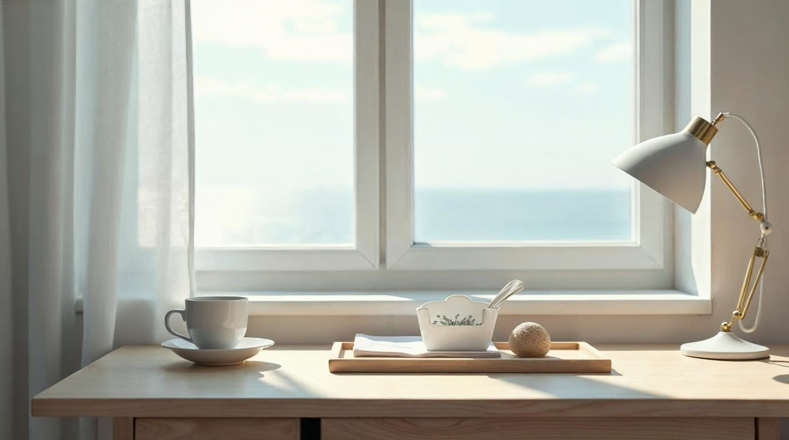
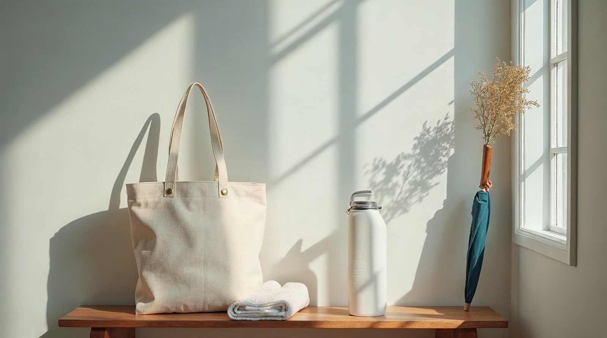
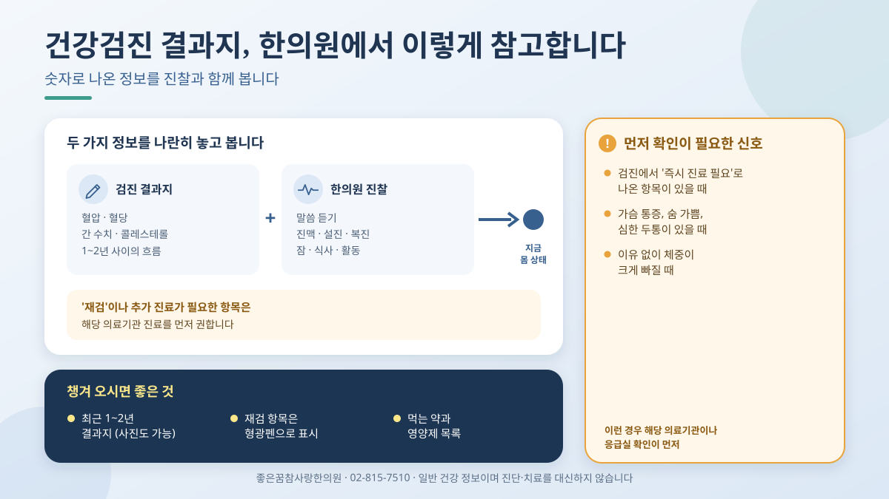

이종호 한의사 감수좋은꿈참사랑한의원 대표원장 (한의사 면허번호 19769)발행 2026-11-23 · 수정 2026-11-26
이 글의 차례
- 왜 이런 불편이 생길 수 있나요
- 결과지에서 어떤 항목을 함께 보나요?
- 왜 한 해의 숫자보다 흐름이 더 많은 것을 알려 줄까요?
- 먼저 이렇게 여쭙니다
- '주의'와 '재검'은 어떻게 다르게 받아들이면 좋을까요?
- 결과지의 숫자와 한의원 진찰은 어떻게 함께 쓰이나요?
- 결과지는 어떻게 준비해 오면 좋을까요?
- 일상에서 먼저 해 볼 수 있는 것
- 검진 뒤 생활을 바꿀 때 무엇부터 시작하면 좋을까요?
- 결과가 모두 정상인데도 몸이 불편하다면?
- 상황별 예시
- 스스로 점검해 보세요
- 한의원에서 함께 살필 수 있는 경우
- 결과를 보고 마음이 무거워졌다면?
- 영양제와 건강식품도 함께 알려 드려야 하나요?
- 가족의 건강 이야기도 도움이 되나요?
- 다음 검진 전에 해 두면 좋은 것
- 첫 방문은 이렇게 진행됩니다
- 얼마나 지켜보고 언제 상담할까요?
- 이렇게 기록해 오시면 상담이 쉬워집니다
- 이런 증상은 먼저 확인이 필요합니다
건강검진 결과지를 가져오시면 혈압, 혈당, 간 수치, 콜레스테롤처럼 숫자로 나온 정보를 진맥·설진·복진과 함께 참고해 지금 몸 상태를 더 구체적으로 이해합니다. 다만 이상 수치의 의미와 재검·추가 진료는 검사한 병원이나 담당 의사에게 먼저 확인하시도록 권해 드립니다. '검진 결과지를 가져가도 되나요?'라는 질문을 자주 받는데, 가져오시면 큰 도움이 됩니다.
결과지를 들고 오시는 분들 가운데에는 '주의'라는 글자 하나 때문에 마음이 무거워진 분도, 반대로 숫자가 무엇을 뜻하는지 몰라 그냥 서랍에 넣어 두셨던 분도 계십니다. 어느 쪽이든 괜찮습니다. 결과지를 펼쳐 놓고 지금 생활과 함께 차근차근 이야기해 보는 것부터 시작합니다.
왜 이런 불편이 생길 수 있나요
- 검진 수치는 검사 당일의 상태와 평소 생활 습관이 함께 반영된 결과입니다.
- 한 해의 숫자보다 1~2년 사이의 흐름을 보면 생활 리듬이 어떻게 달라졌는지 더 잘 보입니다.
- 한의원 진찰은 말씀과 진맥·설진·복진으로 몸을 살피는데, 검진 결과는 이와 다른 방향의 정보를 더해 줍니다.
- '주의'로 나온 항목은 잠, 식사, 활동 같은 생활과 함께 볼 때 무엇부터 바꿀지 정하기 쉬워집니다.
결과지에서 어떤 항목을 함께 보나요?
결과지 전체를 하나하나 해석해 드리기보다, 지금 불편과 생활에 이어지는 항목을 중심으로 함께 봅니다.
- 혈압과 맥박: 잠, 긴장, 두통이나 어지럼 이야기와 함께 보고, 집에서 잰 혈압 기록이 있으면 함께 참고합니다.
- 공복혈당, 당화혈색소: 식사 시간과 야식, 활동량, 체중 변화와 함께 봅니다.
- 간 수치와 중성지방, 콜레스테롤: 술, 기름진 음식, 늦은 식사, 운동 습관과 함께 봅니다.
- 혈색소(빈혈 관련): 피로, 어지럼, 손발 냉감, 생리 양과 함께 봅니다.
- 신장 관련 수치: 한약 상담을 할 때 간 수치와 함께 참고하고, 평소 물 마시는 양과 붓기도 여쭙습니다.
- 체중, 허리둘레, 체질량지수: 식욕과 잠, 활동량과 함께 봅니다. 필요하다고 판단되면 인바디로 근육과 체지방의 구성을 함께 살피기도 합니다.
이 가운데 무엇이 지금 가장 마음에 걸리시는지 먼저 짚어 주시면, 그 항목부터 이야기를 시작합니다. 결과지에 적힌 용어가 낯설면 표시해 두셨다가 물어보셔도 됩니다. 아는 범위에서 쉬운 말로 설명드리고, 더 자세한 의미는 검진한 병원에 확인하시도록 안내합니다.
왜 한 해의 숫자보다 흐름이 더 많은 것을 알려 줄까요?
검진 수치는 검사 전날 먹은 음식, 잠, 긴장 같은 그날의 조건에도 영향을 받습니다. 한 해의 숫자 하나만 보면 그것이 평소 모습인지, 그날 조건 때문인지 가리기 어렵습니다.
1~2년 결과지를 나란히 놓으면 흐름이 보입니다. 예를 들어 공복혈당이나 간 수치가 해마다 조금씩 오르고 있다면, 그 사이 야식이 늘었는지, 일이 바빠져 잠과 운동이 줄었는지를 함께 떠올려 보게 됩니다.
반대로 해마다 비슷하던 수치가 올해만 튀었다면, 검사 전날의 술자리나 잠 부족처럼 그날의 조건부터 떠올려 봅니다. 이렇게 숫자와 생활의 변화를 맞춰 보면 무엇부터 바꿀지 정하기가 훨씬 쉬워집니다.

먼저 이렇게 여쭙니다
- 최근 건강검진은 언제 받으셨나요?
- 결과지에서 '주의'나 '재검'으로 나온 항목이 있나요?
- 그 결과로 다른 병원 진료를 받고 계신가요?
- 결과를 보고 걱정되는 점이 무엇인가요?
'주의'와 '재검'은 어떻게 다르게 받아들이면 좋을까요?
결과지의 표현은 기관마다 조금씩 다르지만, 대체로 '주의'는 지금 당장 치료가 필요하다기보다 생활을 돌아보고 다음 검진에서 다시 보자는 뜻에 가깝습니다. 반면 '재검'이나 '진료 필요'는 한 번 더 확인하거나 해당 진료과에서 살펴봐야 한다는 뜻입니다.
그래서 저는 결과지를 받으면 이 두 가지를 먼저 나눠 봅니다. 재검 항목이 있으면 그 확인부터 먼저 받으시도록 하고, 주의 항목은 진찰에서 얻은 단서와 함께 생활에서 무엇을 바꿔 볼지 이야기합니다. 정확한 기준과 의미는 검진한 병원의 설명을 따르시는 것이 맞습니다.
결과지의 숫자와 한의원 진찰은 어떻게 함께 쓰이나요?
결과지가 몸의 어느 부분에서 '무엇이' 달라졌는지 숫자로 보여 준다면, 진찰은 그 사람이 '어떤 생활 속에서' 지내고 있는지를 보여 줍니다. 맥과 혀, 배를 살피고 잠과 소화, 대소변 이야기를 들으면 같은 숫자라도 사람마다 다른 배경이 보입니다.
예를 들어 같은 정도의 중성지방 수치라도, 늦은 밤 회식이 잦은 분과 스트레스로 단 음식을 자주 찾는 분은 생활에서 바꿔 볼 것이 다릅니다. 두 정보를 나란히 놓고 보면 그분에게 맞는 실마리를 찾기 쉬워집니다. 결과지가 없을 때보다 이야기가 구체적이 되어, 생활에서 바꿔 볼 것을 한두 가지로 좁히는 데도 도움이 됩니다.
결과지는 어떻게 준비해 오면 좋을까요?
- 종이 결과지가 있으면 그대로, 앱이나 메일로 받으셨다면 화면을 캡처하거나 출력해 오기
- 여러 장이라면 요약 페이지와 '주의·재검' 항목이 있는 페이지를 먼저 챙기기
- 주민등록번호처럼 진료에 필요 없는 개인정보는 가리고 가져오셔도 괜찮습니다.
- 재검을 받으셨다면 재검 결과와 그때 들은 설명도 함께 메모해 오기
- 결과지를 가져오기 어려운 날에는 기억나는 항목과 '주의'로 나온 내용만 적어 오셔도 괜찮습니다.
일상에서 먼저 해 볼 수 있는 것
- 최근 1~2년 결과지를 함께 가져오기
- 재검 항목은 형광펜으로 표시해 오기
- 먹고 있는 약과 영양제 목록도 함께 챙기기
- 궁금한 항목을 미리 적어 오기
검진 뒤 생활을 바꿀 때 무엇부터 시작하면 좋을까요?
결과지를 받은 날에는 운동도 시작하고 식단도 바꾸고 술도 끊겠다고 다짐하지만, 한꺼번에 바꾸면 몇 주 못 가 지치는 경우가 많습니다. 저는 한두 가지만 골라 한 달쯤 이어 가 보자고 말씀드립니다.
- 잠: 잠드는 시각을 30분만 앞당겨 보기
- 저녁: 늦은 저녁을 한 시간만 당기거나, 야식을 일주일에 두 번으로 줄이기
- 움직임: 점심 뒤 10~15분 걷기를 평일마다 이어 가기
- 술: 마시는 날 수를 정해 두고 달력에 표시하기
무엇을 고를지는 결과지의 항목과 지금 생활을 함께 보며 정합니다. 바쁜 시기라면 가장 쉬운 것 하나만 골라도 충분합니다. 바꿔 본 것은 달력에 표시해 두시면 다음 검진 때 숫자와 나란히 놓고 볼 수 있습니다. 한 달을 이어 갔다면 그다음 한 가지를 더하고, 지키기 어려웠다면 목표를 더 작게 줄여 다시 시작해도 괜찮습니다.
결과가 모두 정상인데도 몸이 불편하다면?
검진 결과는 모두 정상인데 늘 피곤하고 잠이 얕으며 소화가 더디다는 분도 많습니다. 검진은 정해진 항목을 숫자로 확인하는 것이라, 숫자에 잡히지 않는 불편도 있을 수 있습니다.
이럴 때 '정상이니 괜찮다'고 넘기기보다, 불편이 언제 어떻게 생기는지를 들고 오시면 진맥과 설진, 복진으로 함께 살펴봅니다. 정상 결과지는 큰 걱정거리를 덜어 주는 자료로 함께 참고합니다. 예를 들어 피로가 심한데 빈혈과 갑상선 관련 수치가 정상이었다면, 잠과 식사, 하루의 긴장 쪽으로 이야기를 좁혀 갈 수 있습니다.
상황별 예시
- 예를 들어 검진에서 간 수치와 중성지방이 '주의'로 나온 직장인이라면, 일주일 동안의 술자리와 저녁 식사 시간, 잠든 시각을 함께 여쭙습니다. 수치의 의미와 추가 검사는 검진한 병원에 먼저 확인하시도록 하고, 술자리가 몰리는 요일이 있는지도 함께 살핀 뒤, 한의원에서는 생활에서 하나씩 바꿔 볼 것을 함께 정합니다.
- 예를 들어 공복혈당이 경계 범위로 나왔는데 퇴근이 늦어 밤 10시 넘어 저녁을 드시는 경우라면, 식사 시간과 양, 활동량을 함께 보고, 필요하다고 판단되면 원내에서 당화혈색소를 확인해 다음에 비교할 기준으로 삼기도 합니다.
- 예를 들어 혈색소가 낮게 나왔고 늘 피곤하며 손발이 차다는 분이라면, 생리 양과 식사, 잠을 함께 여쭙고, 원인 확인과 치료는 담당 의사에게 먼저 받아 보시도록 권합니다.
스스로 점검해 보세요
- 최근 2년 안에 건강검진을 받은 적이 있다.
- 결과지에 '주의'나 '재검' 항목이 있지만 아직 확인하지 않았다.
- 같은 항목이 해마다 조금씩 나빠지고 있다.
- 결과를 보고 걱정은 되는데 무엇부터 바꿔야 할지 모르겠다.
- 약이나 영양제를 여러 가지 드시는데 목록이 정리되어 있지 않다.
- 검진 뒤 생활을 바꿔 보려 했지만 오래 이어 가지 못했다.
두 번째 항목에 해당한다면 재검이나 진료부터 먼저 받아 보시길 권하고, 나머지 항목은 진료 때 함께 이야기해 보세요.

한의원에서 함께 살필 수 있는 경우
- 검진 결과를 진맥·설진·복진과 함께 참고해 생활 리듬과 몸 상태를 살핍니다.
- 수치가 걱정되는 경우 식사와 잠, 활동을 함께 살핍니다.
- 재검이나 추가 진료가 필요한 항목은 해당 의료기관 진료를 먼저 권합니다.
좋은꿈참사랑한의원에서는 먼저 결과지와 함께 걱정되는 점을 충분히 듣고, 진맥·설진·복진으로 몸 상태를 살핀 뒤 두 정보를 나란히 놓고 생활에서 함께 살필 점을 말씀드립니다. 필요하다고 판단될 때는 인바디 체성분 측정이나 당화혈색소 같은 항목을 원내에서 확인하기도 합니다.
그 결과에 따라 침, 한약 상담, 생활 리듬 조정 가운데 상태에 맞는 방법을 정합니다. 수치의 의미와 재검, 진단이나 약 조절은 검사한 병원이나 담당 의사에게 먼저 확인하시도록 안내합니다.
결과를 보고 마음이 무거워졌다면?
결과지를 받은 뒤로 걱정이 많아져 잠을 설치거나, 인터넷에서 수치를 찾아보다 더 불안해졌다는 분도 계십니다. 걱정이 큰 것은 그만큼 몸을 잘 챙기고 싶다는 마음이라고 생각합니다.
이럴 때는 혼자 해석하기보다 궁금한 점을 적어 검진한 병원이나 담당 의사에게 먼저 여쭤 보시길 권합니다.
한의원에서는 그 걱정과 함께 지금의 잠, 소화, 긴장을 살피고, 생활에서 할 수 있는 일을 작게 나눠 함께 정합니다. 할 일이 분명해지면 막연한 불안이 조금 가벼워지는 경우가 많습니다. 걱정 때문에 잠을 설치는 날이 이어진다면 그 이야기도 편하게 들려주세요.
영양제와 건강식품도 함께 알려 드려야 하나요?
네, 꼭 알려 주세요. 몸에 좋다고 여러 가지를 함께 드시다 보면 비슷한 성분이 겹치는 경우가 있고, 즙이나 진액 같은 건강식품도 꾸준히 드시면 몸에 영향을 줄 수 있습니다. 간 수치가 '주의'로 나온 분은 최근 새로 시작한 영양제나 건강식품이 있는지 함께 여쭙니다.
한약 상담을 원하시는 경우에는 이 목록이 더 중요합니다. 드시는 약과 영양제, 건강식품을 모두 확인한 뒤 겹치거나 조심할 부분이 없는지 살피고 이야기합니다. 제품 이름이 길면 포장지 사진을 찍어 오셔도 충분합니다.
가족의 건강 이야기도 도움이 되나요?
부모님이나 형제 가운데 고혈압, 당뇨, 고지혈증, 심장이나 뇌혈관 질환이 있는지는 결과지를 읽을 때 함께 참고하는 정보입니다. 같은 수치라도 가족 가운데 비슷한 질환이 있으면 생활 관리를 조금 더 일찍, 꾸준히 챙겨 보시길 권하게 됩니다.
자세히 모르셔도 괜찮습니다. 집에 계신 가족에게 한 번 물어보고 오시면 좋고, '아버지가 혈압약을 드셨다' 정도만 알려 주셔도 충분합니다.
다음 검진 전에 해 두면 좋은 것
- 검진 전날은 과식과 술을 피하고, 안내받은 대로 금식 시간을 지키기
- 가능하면 같은 기관에서 비슷한 시기에 받아 해마다 비교하기 쉽게 하기
- 바꿔 본 생활과 체중 변화를 달력이나 메모에 이어서 적어 두기
- 지난번 결과를 보며 궁금했던 점을 적어 두었다가 검진 상담 때 여쭤 보기
첫 방문은 이렇게 진행됩니다
- 이야기 듣기: 결과지와 함께 걱정되는 점, 지금 불편한 점, 잠과 식사, 활동, 드시는 약과 영양제를 먼저 충분히 듣습니다.
- 맥 짚기: 모든 분께 맥부터 짚어 몸 전체 상태를 살핍니다.
- 혀와 배 살피기: 혀의 색과 설태를 보고, 필요하면 누우신 상태에서 배를 살핍니다.
- 결과지 함께 보기: 마음에 걸리시는 항목부터 진찰에서 얻은 단서와 나란히 놓고 이야기합니다. 필요하다고 판단되면 인바디나 당화혈색소 같은 항목을 원내에서 확인하기도 합니다.
- 방향 정하기: 생활에서 바꿔 볼 것을 한두 가지로 좁히고, 침, 한약 상담 가운데 상태에 맞는 방법을 정합니다. 한약은 드시는 약과 간·신장 관련 결과를 확인한 뒤 이야기합니다.
얼마나 지켜보고 언제 상담할까요?
- '주의' 항목은 생활을 몇 달 조정해 보고, 다음 검진이나 담당 의사가 권한 시기에 다시 확인해 흐름을 봅니다.
- '재검'이나 '진료 필요'로 나온 항목은 기다리지 말고 검진한 병원이나 해당 진료과에서 먼저 확인합니다.
- 수치보다 피로나 잠, 소화 같은 몸의 불편이 더 크게 느껴진다면 그 이야기를 들고 상담을 받아 보세요.
이렇게 기록해 오시면 상담이 쉬워집니다
- 최근 1~2년 건강검진 결과지
- 재검·주의 항목과 그 뒤 받은 진료
- 복용 중인 약과 영양제 목록
- 결과를 보고 가장 궁금한 점 한두 가지
이런 증상은 먼저 확인이 필요합니다
- 검진에서 '즉시 진료 필요'로 나온 항목이 있는 경우
- 가슴 통증, 숨 가쁨, 갑자기 시작된 심한 두통 가운데 하나라도 있는 경우
이런 신호가 있으면 한의원보다 가까운 병원이나 응급실을 먼저 찾으세요.

여쭙는 것
- 최근 건강검진은 언제 받으셨나요?
- 결과지에서 '주의'나 '재검'으로 나온 항목이 있나요?
- 그 결과로 다른 병원 진료를 받고 계신가요?
생활에서 해 볼 것
- 최근 1~2년 결과지를 함께 가져오기
- 재검 항목은 형광펜으로 표시해 오기
- 먹고 있는 약과 영양제 목록도 함께 챙기기
한의원에서 함께 살필 것
- 검진 결과를 진맥·설진·복진과 함께 참고해 생활 리듬과 몸 상태를 살핍니다.
- 수치가 걱정되는 경우 식사와 잠, 활동을 함께 살핍니다.
- 재검이나 추가 진료가 필요한 항목은 해당 의료기관 진료를 먼저 권합니다.
먼저 확인이 필요한 신호
- 검진에서 '즉시 진료 필요'로 나온 항목이 있는 경우
- 가슴 통증, 숨 가쁨, 갑자기 시작된 심한 두통 가운데 하나라도 있는 경우
한눈에 보는 표
| 구분 | 핵심 |
|---|---|
| 여쭙는 것 | 최근 건강검진은 언제 받으셨나요? 결과지에서 '주의'나 '재검'으로 나온 항목이 있나요? |
| 생활에서 해 볼 것 | 최근 1~2년 결과지를 함께 가져오기 재검 항목은 형광펜으로 표시해 오기 |
| 한의원에서 함께 살필 것 | 검진 결과를 진맥·설진·복진과 함께 참고해 생활 리듬과 몸 상태를 살핍니다. 수치가 걱정되는 경우 식사와 잠, 활동을 함께 살핍니다. |
| 먼저 확인이 필요한 신호 | 검진에서 '즉시 진료 필요'로 나온 항목이 있는 경우 가슴 통증, 숨 가쁨, 갑자기 시작된 심한 두통 가운데 하나라도 있는 경우 |
자주 묻는 질문
검진 결과지가 없으면 진료가 어렵나요?
아니요. 없어도 진찰은 가능합니다. 있으면 참고 자료가 됩니다.
한의원에서도 혈액검사를 하나요?
필요하다고 판단될 때 확인할 수 있는 항목이 있습니다. 진단과 약 조절은 해당 의료기관에서 받으시도록 안내합니다.
결과지를 사진으로 찍어 가도 되나요?
네. 글씨가 잘 보이게 찍어 오시면 충분합니다.
검진 결과를 보고 혈압약이나 당뇨약을 줄여도 되나요?
드시는 약은 임의로 줄이거나 끊지 마세요. 약 조절은 처방한 담당 의사와 상의하셔야 하고, 한의원에서는 그 상태에서 생활과 몸 상태를 함께 살핍니다.
진료 시간은 어떻게 되나요?
좋은꿈참사랑한의원은 평일 09:30~20:00(점심 13:00~14:00), 토·일·공휴일 09:30~15:00에 진료합니다.
좋은꿈참사랑한의원은 재진 때 지난번 이야기부터 이어서 여쭙니다. 진료시간과 예약은 오시는 길에서 확인하세요.
어디서 상담받을 수 있나요?
좋은꿈참사랑한의원은 서울 동작구 만양로2길 2 신성빌딩 3층·5층(서울 동작구 상도동, 7호선 상도역 3번 출구 근처)에 있습니다. 한의사 3명(이종호 대표원장, 조영기 수석진료원장, 정원영 진료원장)이 진료합니다. 진료시간은 평일 09:30~20:00(점심 13:00~14:00), 토·일·공휴일 09:30~15:00이며, 방문 전 전화로 확인을 권합니다. 예약은 네이버 예약, 카카오톡 상담, 전화 02-815-7510로 받습니다.
이 글은 일반적인 건강 정보이며 개인의 진단이나 치료를 대신하지 않습니다. 증상이 있거나 복용 중인 약이 있다면 진료를 통해 확인하세요. 치료 효과는 개인마다 다를 수 있습니다.
작성 기준: 일반적으로 알려져 있는 건강 정보를 참고해 정리했습니다(대표원장 감수). 증상 기록은 1~2주 동안 하루 1회, 비슷한 시간에 적어 오시면 지난 상태와 비교하기 쉽습니다.